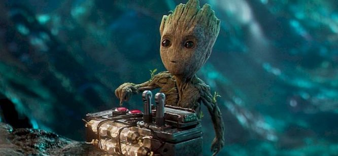
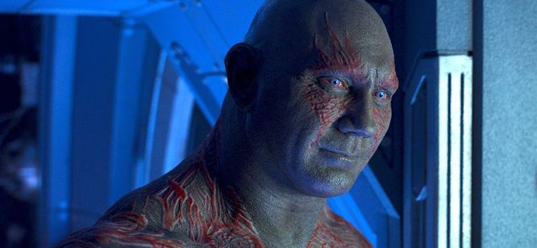

.svg)
Des héros qui n'ont pas( tous ) la main verte !

Les Gardiens de la Galaxie. Ces héros qui parcourent l’univers à bord de leur vaisseau pour protéger le monde. Héros qui n'hésitent pas à tout détruire sur leur passage. Avec les nombreux incendies criminels de Rocket, ou leurs destructions massives de navettes et de planètes. Ce qui est sûr c’est qu’ils ne sont pas des gardiens de l’écologie ! De plus, ils utilisent un nombre incalculable de litres de carburant. Un vaisseau pareil, consomme forcément un peu plus qu’une tondeuse à gazon !
Comment les Gardiens polluent-ils ?
Et oui ! Pour sauver le monde, piller ou faire le tour des bars extraterrestres, nos amis polluent. Et pas qu’un peu ! Ils se présentent comme des héros prêts à donner leur vie pour nous sauver. Malheureusement, ce n’est pas forcément le cas
ROCKET
S’il y’en a bien un pour détruire l’environnement, je crois qu’on tient notre “homme” ! On peut le trouver n’importe où et dans n’importe quelle situation. Mais jamais bien longtemps sans dynamite entre les pattes. C’est le roi de l’explosion et du feu ! Il n’hésitera pas un instant avant d'enflammer une planète entière. Question écologie notre amis en a long sur la conscience. Il est certain que ce n’est pas lui qui sauvera notre équipe aujourd’hui.
Groot
Voici notre héro du moment ! Certes, il n’est pas toujours très dégourdi et a un vocabulaire plutôt limité (je s'appelle groot). Mais cependant, Groot est la parfaite mascotte pour les amoureux de la nature. Il n’utilise aucune arme, et ne casse rien (sauf sous l’influence de Rocket).
Gamora
Sa sœur détruit tout sur son passage, Son père veut anéantir l’univers. Bref une famille pas très écolo. Il est probable que le tri des déchets ne soit pas leur principale préoccupation.
Drax le Destructeur
Son nom résume assez bien le problème. Comme tout bon gardien de notre équipe, la destruction c’est son truc. Notre masse de muscle ne mettra jamais bien longtemps à tout dégommer. Que ce soit matériel ou vivant d’ailleurs.
Star Lord
Enfin nous en arrivons à Peter Quill. C’est lui qui nous intéresse le plus aujourd’hui. Et pourquoi ? Car c’est le pilote du vaisseau dans lequel notre belle bande explosive voyage. Parcourant ainsi l’univers, de galaxie en galaxie. Le problème avec ce vaisseau c’est qu’il pollue énormément.
Le vaisseau pollue-t-il tant que ça ?
On peut faire la comparaison avec une fusée. Certe un peu primitif par rapport à la navette de notre cher Star Lord. On peut pourtant être sûr qu’elle consommera bien moins. On se basera d’ailleurs seulement sur le Co2 délivré par cette fusée. Ce sera donc une estimation à la louche. Ce qui donne un bon 28 tonnes de CO2 par décollage environ. Étant donné que nos héros utilisent leur vaisseau pour chaque déplacement ça fait … beaucoup. On pourrait d’ailleurs faire des comparaisons. Car 28 tonnes de Co2 c’est ce qu’émettent 100 voitures parcourant 23 629 km. C’est aussi l’équivalent une voiture qui fait 589 fois le tour de la terre.